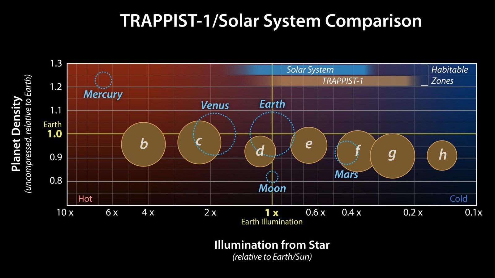
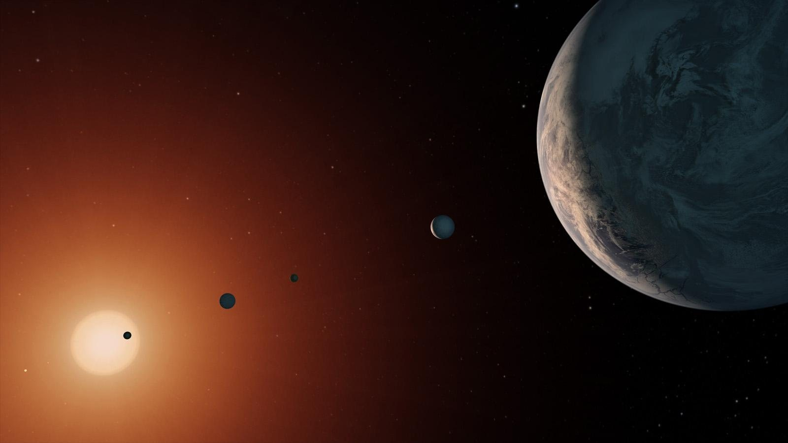

Proxima Centauri b
Ο πλησιέστερος εξωπλανήτης, γύρω από τον ερυθρό νάνο του συστήματος Άλφα Κενταύρου. Βρίσκεται στη ζώνη κατοικησιμότητας, αλλά η έντονη αστρική δραστηριότητα μπορεί να έχει γυμνώσει την ατμόσφαιρά του.
Η μεγαλύτερη ανοιχτή ερώτηση
Γνωρίζουμε πάνω από 5.000 επιβεβαιωμένους εξωπλανήτες και κανένα ίχνος ζωής. Όμως η αναζήτηση μόλις άρχισε: για πρώτη φορά μπορούμε να αναλύσουμε ατμόσφαιρες μικρών, βραχωδών κόσμων.
Η επιστήμη δεν μπορεί να απαντήσει ακόμα, αλλά μπορεί να ορίσει το πλαίσιο. Γνωρίζουμε ότι η ζωή στη Γη εμφανίστηκε σχεδόν αμέσως μόλις οι συνθήκες το επέτρεψαν — μέσα σε λίγες εκατοντάδες εκατομμύρια χρόνια. Γνωρίζουμε ότι τα χημικά συστατικά της ζωής (άνθρακας, νερό, οργανικές ενώσεις) είναι κοινά στο σύμπαν και βρίσκονται ακόμη και σε κομήτες.
Αυτό δεν σημαίνει ότι η ζωή είναι συχνή. Το αντίθετο: το πέρασμα από απλά μόρια σε αυτοαναπαραγόμενους οργανισμούς μπορεί να είναι εξαιρετικά σπάνιο. Η απάντηση βρίσκεται κάπου ανάμεσα στο «είμαστε μόνοι» και στο «το σύμπαν είναι γεμάτο ζωή» — και κανείς δεν ξέρει πού.
Οι εξωπλανήτες είναι δύσκολο να δεις: χάνονται στη λάμψη του άστρου τους. Γι' αυτό ανιχνεύονται έμμεσα. Η μέθοδος διέλευσης μετρά τη μικρή μείωση φωτεινότητας όταν ο πλανήτης περνά μπροστά από το άστρο. Η μέθοδος ακτινικής ταχύτητας μετρά την κίνηση του άστρου που προκαλεί η βαρύτητα του πλανήτη. Υπάρχουν επίσης μικροβαρυτική μικροεστίαση και, πρόσφατα, απευθείας απεικόνιση με στεφάνη.
Το τηλεσκόπιο Kepler (2009–2018) έδειξε ότι οι πλανήτες είναι ο κανόνας, όχι η εξαίρεση: σχεδόν κάθε άστρο φαίνεται να έχει τουλάχιστον έναν. Το TESS συνεχίζει την αναζήτηση σε κοντινά άστρα, κατάλληλα για φασματοσκοπία με το James Webb.
Η κατοικήσιμη ζώνη είναι η περιοχή γύρω από ένα άστρο όπου ένας βραχώδης πλανήτης με κατάλληλη ατμόσφαιρα θα μπορούσε να διατηρεί υγρό νερό στην επιφάνειά του. Δεν είναι ούτε απαραίτητη ούτε επαρκής συνθήκη για ζωή: η Αφροδίτη και ο Άρης βρίσκονται στα όριά της, αλλά κανένας δεν είναι κατοικήσιμος σήμερα.
Η ζώνη εξαρτάται από τη φωτεινότητα του άστρου, που αλλάζει με τον χρόνο. Ένα άστρο σαν τον Ήλιο γίνεται σταδιακά λαμπρότερο, άρα η ζώνη μετακινείται προς τα έξω. Οι ερυθροί νάνοι — τα πιο κοινά άστρα — έχουν πολύ στενές ζώνες και έντονη ακτινοβολία κατά τις εκλάμψεις τους, γεγονός που περιπλέκει την εικόνα.
Κανένας δεν είναι «δεύτερη Γη» — αλλά κάποιοι είναι τα καλύτερα υποψήφια που έχουμε μέχρι σήμερα.

Ο πλησιέστερος εξωπλανήτης, γύρω από τον ερυθρό νάνο του συστήματος Άλφα Κενταύρου. Βρίσκεται στη ζώνη κατοικησιμότητας, αλλά η έντονη αστρική δραστηριότητα μπορεί να έχει γυμνώσει την ατμόσφαιρά του.

Ένας από επτά βραχώδεις πλανήτες γύρω από έναν μικροσκοπικό ερυθρό νάνο. Το μέγεθος και η πυκνότητά του είναι παρόμοια με της Γης και δέχεται περίπου την ίδια ενέργεια από το άστρο του.

Πλανήτης σε τροχιά γύρω από ένα άστρο σαν τον Ήλιο, με περίοδο 385 ημερών. Είναι 60% μεγαλύτερος από τη Γη και πιθανώς βραχώδης — ένα «μεγαλύτερο ξαδέρφι» της.

Ο πρώτος βραχώδης πλανήτης στο μέγεθος της Γης που βρέθηκε στη ζώνη κατοικησιμότητας ενός άλλου άστρου. Το φως του άστρου του είναι πιο κόκκινο, οπότε η «μέρα» του θα έμοιαζε με το λυκόφως.
Δεν ψάχνουμε για UFO — ψάχνουμε για χημεία που δεν εξηγείται χωρίς ζωή. Μια βιοϋπογραφή είναι ένα μόριο ή μια αναλογία αερίων που δείχνει ενεργό βιολογία. Στη Γη, το οξυγόνο και το μεθάνιο συνυπάρχουν σε ανισορροπία μόνο επειδή τα παράγουν έμβια όντα.
Το James Webb ήδη μετρά ατμόσφαιρες πλανητών όπως ο K2-18b και ο TRAPPIST-1e, αναζητώντας νερό, διοξείδιο του άνθρακα, μεθάνιο και διμεθυλοσουλφίδιο. Κάθε ανίχνευση χρειάζεται ανεξάρτητη επιβεβαίωση: αρκετές «ανακαλύψεις» στο παρελθόν ήταν στατιστικά θόρυβος.
Επιβεβαιωμένο: Υπάρχουν πάνω από 5.000 εξωπλανήτες, με χιλιάδες ακόμη υποψηφίους. Υπάρχει υγρό νερό σε υπόγειους ωκεανούς της Ευρώπης και του Εγκέλαδου. Οργανικά μόρια υπάρχουν σε κομήτες και σε μεσοαστρικά νέφη.
Μη επιβεβαιωμένο: Δεν υπάρχει καμία αποδεδειγμένη βιοϋπογραφή σε εξωπλανήτη, κανένα ίχνος εξωγήινης τεχνολογίας και καμία απόδειξη ότι η ζωή εμφανίστηκε κάπου αλλού. Η απάντηση στο ερώτημα «είμαστε μόνοι;» παραμένει ανοιχτή.